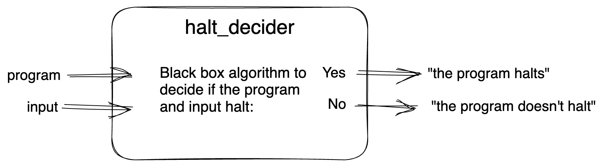
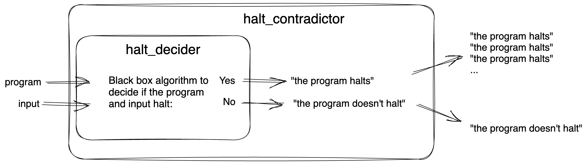

The Halting Problem
Summary
The Halting Problem is a first-order absolute epistemic limit. It says that it is impossible for there to exist a computer program that identifies whether any possible computer program and its input will halt as opposed to running forever. This impossibility is shown through a contradiction that results from running the program on itself. The halting problem demonstrates an absolute limit on an observer’s ability to know the results of this type of computational task. The only way to know if any possible program will halt is to run it and see. For many algorithms that do not halt during the time we observe them, we will never know if they do or do not halt. To say for sure, we would need to run them for infinite time, which we do not have.
Introduction
Imagine a busy day at your desk job. You have dozens of applications running simultaneously on your computer. Suddenly, it begins to slow down, and one application appears to be stuck in an infinite loop, consuming resources and degrading the performance of the system. Will the application eventually resolve this issue and return to normal? Or will it remain in this state indefinitely? This somewhat mundane, somewhat frustrating scenario illustrates the essence of the halting problem: given a computer program and an input, can we determine if the program will eventually halt or continue running forever? The halting problem demonstrates that the answer is no we can’t.
Explanation
The halting problem asserts that no program can be devised to determine if a program and its input will halt or run forever for all possible pairs of programs and inputs.
We will demonstrate this with a proof by contradiction. The following explanation borrows heavily from Noson Yanofsky’s excellent book, The Outer Limits of Reason. If epistemic limits interest you, I highly recommend it.
The programs we will be examining are everyday computer programs. For example, we could code a program to take a number x and keep adding two to it until the number is greater than or equal to 10, then output the result. Let’s call this program two_adder. So for x = 4, the result would be 10 (4 + 2 \(\rightarrow\) 6 + 2\(\rightarrow\) 8 + 2 \(\rightarrow\) 10). For x = 7, the output would be 11. For x = 15, the output would be 15. This is a nice simple program with a range of input values. We figured out if it halts just by running it in our heads. It’s pretty clear it stops.
Suppose we can construct a program that can determine if any such program and its inputs halt. We’ll call this program halt_decider. We could feed in our program two_adder and a value for x, say 7, and halt_decider will output “two_adder halts” if it halts and “two_adder doesn’t halt” otherwise. Figure 1 below schematically depicts such a program.

Now suppose we can make another program that we’ll call halt_contradicter. It will do something weird. It will take a program and an input value then call halt_decider to see if it halts. If halt_decider indicates the program and input halts, then we’ll have halt_contradictor go into an infinite loop printing “{program name} halts.” If halt_decider indicates that the program does not halt, then halt_contradictor will print one time “{program name} doesn’t halt.” Basically, halt_contradictor takes the output of halt_decider and does the opposite. If the input program halts, halt_contradictor loops forever. If the input program doesn’t halt, halt_contradictor halts. Figure 2 should help clarify this confusing setup.

Let’s feed in two_adder with an input value of 7 to halt_contradictor. We said earlier it will halt, so halt_decider will indicate “It halts”. Halt contradictor will take that output and then print “two_adder halts” “two_adder halts” “two_adder halts”….. in an infinite loop.
One final element we need is to number all of our programs. It doesn’t matter how we number them, but each one needs to have a unique reference number. For program two_adder we could assign the number 123, for halt contradictor we could assign the number 9, etc. Computers have no problem assigning reference keys to represent programs that run in other programs.
Now we will break the program. Since halt_contradictor is a program, let’s feed it into itself! Let’s say that halt_contradictor is the program that is going into halt_contradictor along with the numeric encoding for halt_contradictor that we said was 9. What happens when we do this? If halt_decider says that halt_contradictor halts, it says “halt_contradictor halts.” Halt_contradictor will take that output and do the opposite. It will print “halt_contradictor halts” in an infinite loop. If halt_decider says “halt_contradictor doesn’t halt”, then halt_contradictor will print out “halt_contradictor doesn’t halt” once and then…halt.
Contradiction
Do you see the contradictions?
If halt_decider says that halt_contradictor with the halt_contradictor program and input 9 (numeric encoding of itself) halts, then we saw that that halt_contradictor with the halt_contradictor program and input 9 will not halt!
Similarly, if halt_decider says that halt_contradictor with these inputs doesn’t halt, then halt_contradictor with those inputs will halt!
These contradictions arose because we assumed that the halt_decider is a real program. If our assumption leads to a contradiction, then our assumption is false. Therefore, halt_decider cannot exist, and we can conclude there is no program that can solve the halting problem.
Importance
This may seem like a contrived example of self-reference, but its implications are enormous. After the Halting Problem was described, researchers discovered many other similar problems. The Halting Problem established the existence of a whole class of problems that are undecidable. Undecidable problems have a clear “yes” or “no” answer, such as “will a program halt?”, but we will never know the answer completely because no computational method or rational effort can provide the answer. What’s more, if we could solve the Halting Problem, we could solve other undecidable problems such as Goldbach’s Conjecture or compute measures of Kolmogorov complexity.
Lastly, devastatingly, there are an uncountably infinite number of undecidable problems. There are an uncountably infinite number of questions that no human nor artificial general intelligence can answer. As rational agents navigate the vast landscape of truth, there will forever be a horizon of questions we can ask but have no method of answering. The answers will be out there, beyond us, forever.
References
RedTeamGPT
I like to use ChatGPT to red team the essay. It acts as both Adversary and Confederate. The Adversary takes on a certain perspective and provides a critique. The Confederate defends the essay from the critique. We’ll go back and forth a few times. This helps me understand where the essay falls short and how to improve the argument in the future. The unedited critiques are provided below.
Adversary: Skeptic
Adversary Response 1
The essay presents an argument that the Halting Problem illustrates an absolute limit on our ability to know the results of certain computational tasks, thus demonstrating a boundary to human reason. While the essay provides a detailed explanation of the Halting Problem and its consequences, it falls short in establishing a direct connection between the problem and the purported limitations of human reason. It is essential to address this gap to make a more robust case for the author’s argument.
First, it is important to recognize that the Halting Problem is a problem of computation, specifically concerning Turing machines or algorithms. Although it illustrates the existence of undecidable problems in the realm of computation, it does not necessarily imply a limit to human reason in general. Reasoning is a multifaceted process that goes beyond computation, encompassing aspects such as intuition, creativity, and judgment. Therefore, the Halting Problem’s impact on computation should not be generalized to encompass all facets of human reason.
Moreover, the essay’s conclusion that there are “an uncountably infinite number of undecidable problems” that “no human nor artificial general intelligence can answer” might be overstating the case. While it is true that the Halting Problem has led to the discovery of other undecidable problems, it is essential to recognize that these problems are specific to certain mathematical and computational contexts. It is not accurate to claim that all undecidable problems are beyond the reach of human reason or artificial intelligence, as there may be other methods or approaches to address them that go beyond the scope of Turing machines or algorithms.
Furthermore, the essay assumes that the existence of undecidable problems signifies a fundamental limit to human reason. However, it is possible that the discovery of undecidable problems is merely an indication of the limitations of our current mathematical and computational models. As our understanding of mathematics, computation, and artificial intelligence evolves, we may develop new models and techniques to address previously undecidable problems. Consequently, the existence of undecidable problems may not be an insurmountable barrier to human reason but rather a challenge that could potentially be overcome through scientific progress.
In conclusion, while the essay provides an interesting and detailed account of the Halting Problem, it does not convincingly demonstrate that the problem is indicative of an absolute limit to human reason. To strengthen the argument, it would be necessary to explore the relationship between the Halting Problem and human reason more deeply, considering the multifaceted nature of reasoning and the potential for future developments in mathematics and computation to address undecidable problems.
Defender Response 1
The critical response raises important points about the potential limitations of using the Halting Problem to argue for an absolute limit to human reason. It is true that reasoning is a multifaceted process that goes beyond computation and encompasses aspects such as intuition, creativity, and judgment. However, the essay’s main argument stems from the idea that the Halting Problem exposes an inherent limit to our ability to understand certain computational tasks, which can be extrapolated to other areas of knowledge.
It is important to note that, while the Halting Problem is indeed a computational issue, computation is a fundamental aspect of various domains, including mathematics, logic, and even natural sciences. In this sense, the existence of undecidable problems does highlight the presence of limitations in our understanding, as these problems could potentially have implications beyond the realm of computation.
Moreover, the critical response suggests that the existence of undecidable problems might not signify a fundamental limit to human reason, as future scientific progress could potentially lead to new models and techniques to address these issues. While this is a valid point, it is essential to recognize that the undecidability of the Halting Problem is a proven mathematical result, not a mere conjecture. As such, it represents a definitive boundary in our understanding of certain computational tasks, regardless of any future advances in mathematics and computation.
Additionally, the essay acknowledges the possibility that not all undecidable problems are beyond the reach of human reason or artificial intelligence. However, it emphasizes the existence of a class of problems that are, by their very nature, unsolvable through computational methods or rational efforts. The discovery of these problems, which have clear “yes” or “no” answers yet remain inaccessible to human understanding, underscores the existence of limits to our rational capabilities.
In conclusion, while the critical response provides valuable insights into the complexity of human reasoning and the potential for scientific progress to address previously undecidable problems, the Halting Problem remains a compelling example of an inherent limit to our understanding of certain computational tasks. By extension, this problem illustrates that there are boundaries to human reason, even if they may not encompass all facets of reasoning or apply to every domain of knowledge.
Adversary Response 2
The response to the critical response seeks to clarify and defend the essay’s argument that the Halting Problem illustrates an inherent limit to human reason. While the response does address some points raised by the critical response, it still leaves room for further debate on the relationship between the Halting Problem and the broader concept of human reason.
First, the response argues that computation is a fundamental aspect of various domains and that the Halting Problem’s implications might extend beyond computation. However, it does not provide concrete examples of how the existence of undecidable problems in the realm of computation might impact other areas of knowledge. To strengthen the argument, it would be necessary to establish a more direct connection between the Halting Problem and other disciplines or aspects of human reason.
Moreover, the response acknowledges that the undecidability of the Halting Problem is a proven mathematical result, representing a definitive boundary in our understanding of certain computational tasks. However, it is essential to consider that this boundary may only apply to the specific framework of Turing machines and algorithms. As our understanding of mathematics, computation, and artificial intelligence evolves, alternative models or methods might emerge that circumvent or reframe the problem, revealing new possibilities for addressing previously undecidable issues.
Additionally, the response emphasizes the existence of a class of problems that are unsolvable through computational methods or rational efforts. While this is an important point, it does not fully address the critical response’s argument that human reason is multifaceted and goes beyond computation. It is possible that some undecidable problems could be addressed through other aspects of human reasoning, such as intuition or creativity. The response does not sufficiently explore this possibility, which could lead to a more nuanced understanding of the relationship between the Halting Problem and the limits of human reason.
In conclusion, the response to the critical response does provide some defense of the essay’s argument, but it does not adequately address the complexity of human reason or the potential for future developments to impact our understanding of undecidable problems. To establish a more robust connection between the Halting Problem and the purported limitations of human reason, it would be necessary to explore these areas more deeply and consider alternative perspectives on the nature of reasoning and the potential for scientific progress to reveal new avenues for addressing undecidable issues.
Defender Response 2
The second critical response presents a thoughtful critique of the arguments made in the response to the initial critical response. While the points raised deserve consideration, it is essential to reiterate and expand upon the key arguments that connect the Halting Problem to the limitations of human reason.
First, the second critical response requests concrete examples of how the existence of undecidable problems in computation might impact other areas of knowledge. One such example is the concept of Gödel’s Incompleteness Theorems, which have profound implications for mathematics and logic. These theorems demonstrate that there are mathematical statements that are true but cannot be proven within a given formal system. This finding exposes the inherent limitations of formal systems, which in turn can be related to the Halting Problem, as both highlight the existence of problems that cannot be solved within their respective frameworks. This connection demonstrates that the Halting Problem’s implications extend beyond computation and into other domains, including mathematics and logic, which are foundational to human reasoning.
Regarding the point that the Halting Problem’s boundary may only apply to the specific framework of Turing machines and algorithms, it is crucial to note that Turing machines serve as a widely accepted model of computation and have been shown to be equivalent to other general models of computation. While it is true that alternative models or methods may emerge in the future, the Halting Problem’s undecidability has been proven within the widely accepted framework of Turing machines, highlighting a fundamental limitation within the current understanding of computation.
As for the multifaceted nature of human reason and the possibility that some undecidable problems could be addressed through intuition or creativity, it is essential to recognize that the essay acknowledges the complexity of human reasoning. The argument is not that the Halting Problem represents a limit to all facets of human reason but rather that it exposes a limitation within the realm of computation, which has implications for other areas of knowledge. The existence of unsolvable problems within the framework of computation serves as a reminder that even the most advanced reasoning, whether human or artificial, can encounter insurmountable boundaries.
In conclusion, the second critical response raises valid concerns about the relationship between the Halting Problem and the limitations of human reason. However, by considering the broader implications of the Halting Problem for mathematics and logic, as well as the fundamental nature of Turing machines in the context of computation, the argument that the Halting Problem exposes a limitation within human reason remains compelling. While it is essential to recognize the multifaceted nature of reasoning, the existence of unsolvable problems within the current understanding of computation serves as a humbling reminder of the boundaries we may encounter in our pursuit of knowledge.